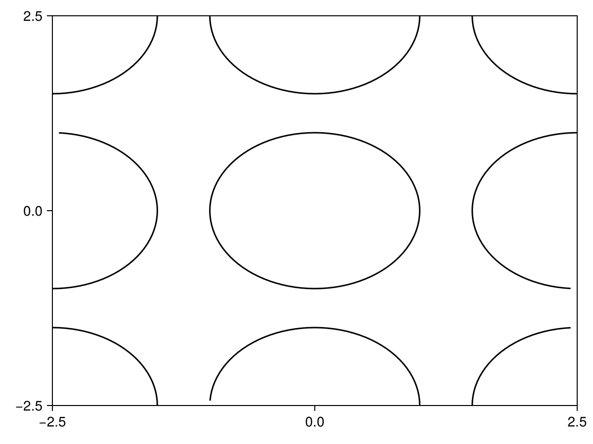
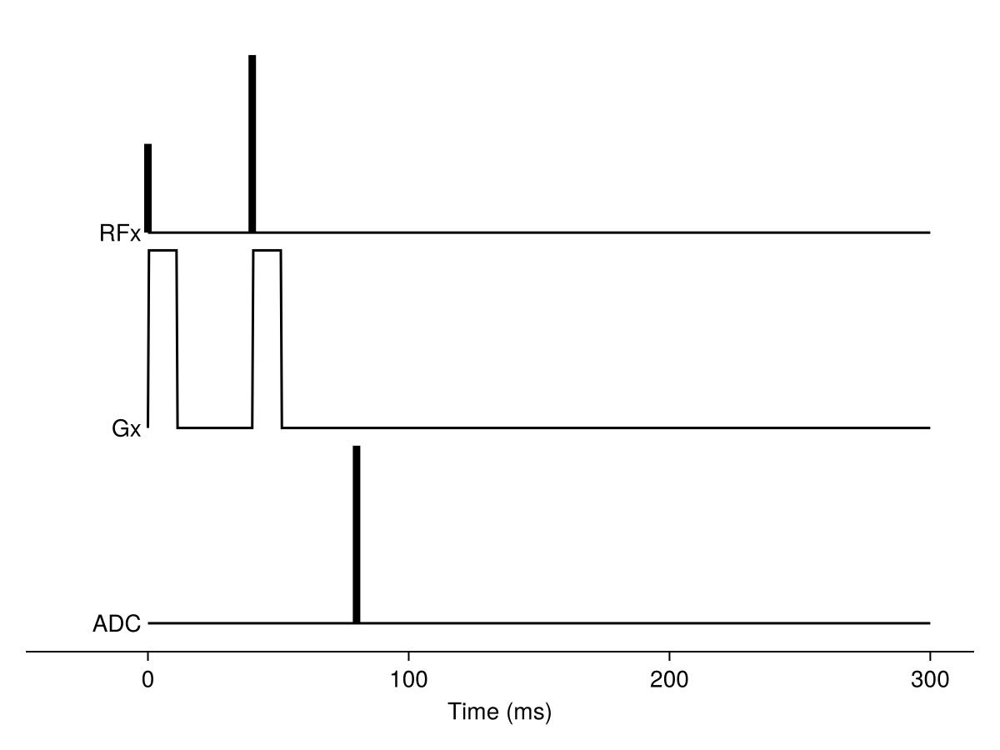

Tutorial
This tutorial will walk through an example of modelling the MRI signal evolution for a diffusion-weighted sequence. The spins in this simulation will be constrained by regularly packed cylinders. This tutorial will use the programatic Julia interface, which you can run in the Julia REPL or in a Jupyter notebook. If you would prefer to use the command line interface, you can find a tutorial doing the same analysis here.
After installation we can load MCMRSimulator.jl using
using MCMRSimulator
using CairoMakie # used for plotting; use GLMakie or WGLMakie for interactive plots
update_theme!(Theme(Axis=(xgridvisible=false, ygridvisible=false))) # hide grid linesIn general, running a simulation will consist of the following three steps:
- Defining the microstructure and one or more sequences by creating an appropriate
Simulationobject. - Initialising
Snapshotwith one or moreSpinobjects. - Simulating a random walk of the spins through the microstructure and the MR signal produced by those spins.
- Plotting the MR signal or storing it to disk.
We will look through each of these steps below.
Defining the simulation
The first step is to define the environment through which the spins will evolve. We will do so by creating an appropriate Simulation object. This Simulation will contain information on the microstructure, how spins interact with that microstructure, and the enabled sequence(s).
These different steps are described in more detail in other sections of this documentation:
First we will define a geometry formed of regularly packed axons. This is represented by a single cylinder with a radius of 1 micrometer that repeats itself every 2.5 micrometer (in both the x-, and y-direction).
geometry = Cylinders(radius=1., repeats=[2.5, 2.5])
f = plot(PlotPlane(size=5), geometry)
xlims!(f.axis, -2.5, 2.5)
ylims!(f.axis, -2.5, 2.5)
f
More complicated geometries can be generated as described here. More details on plotting geometries can be found in the plot_geometry documentation.
The next step is to define a sequence (see here for more details). Here we will adopt a single diffusion-weighted MRI sequence.
sequence = dwi(bval=2., TR=1000, TE=80, scanner=Siemens_Prisma) # default gradient orientation in the x-direction
f = plot(sequence)
hideydecorations!(f.axis)
hidespines!(f.axis, :l, :r, :t)
xlims!(f.axis, -10, 110)
f More details on plotting sequences can be found in the plot_sequence documentation.
Once we have both a geometry and one or more sequences, we can put them together in a Simulation object:
simulation = Simulation(sequence, R2=0.012, R1=3e-3, diffusivity=2., off_resonance=0.1, geometry=geometry)By default there is no T1 or T2 relaxation and a diffusivity of 3 um^2/ms. Enabling spin relaxation and diffusion requires setting the appropriate parameters in the Simulation as seen here. The spin relaxation rates can be different in different compartments as described here.
Initialising the simulation
The current state of the simulation at any time is given by a Snapshot object. This is essentially a vector of Spin objects with a time stamp. Each Spin represents a single diffusing particle. Besides containing its current position, it also contains its contribution to the MR signal for each of the sequences in the simulation and whether it is stuck on any surfaces.
The recommended way to initialise is to call Snapshot(<number of spins>, <simulation>, [bounding_box]). This will create randomly distributed spins within some BoundingBox. By default this bounding box is an isotropic voxel with a size of 1 mm centered on the origin.
After initialisation or after running the simulation, the Snapshot can be later filtered to include only spins inside/outside specific compartments or only include free/bound spins using [get_subset].
The simulation can also be initialised explicitly using a sequence of positions (i.e., length-3 vectors) with the initial spin positions. Note that such a simulation will start with all spins free and not necessarily randomly distributed, which means it might take some time to reach an equilibrium.
For each of these initialisations the initial magnetisation can be explicitly set using the transverse, longitudinal, and phase flags. The default is for spins to start in equilibrium (i.e., transverse magnetisation of 0 and longitudinal magnetisation of 1).
Finally, one could start a simulation using a Snapshot from a previous simulation.
Each Spin is assigned a random number state at creation, which will be used for its future evolution. This means that after creation of a spin or a Snapshot its future is fully determined. This ensures that when a spin is evolved through the same simulation multiple times, it sill follow the same path each time. This allows improved comparisons between simulations with the same geometry, but different sequences/physics. However, it can lead to confusing results (e.g., a simulation initialised with fill(Spin(), 500) will contain 500 spins all following the exact same path).
Running the simulation
The main way to run a simulation is by calling readout. This function takes a Snapshot and a Simulation as input (or a number of spins, which will be used to generate a new Snapshot on the fly). There are various ways to define when the output will be read out (as described in the readout documentation).
Here, we will illustrate various examples of using this function:
Simple signal readouts
Most sequences will contain one or more Readout objects, which define when the sequence will be read out during each repetition time (TR). To get the signal at this time, we can simply call:
readout(1000, simulation)SpinOrientationSum(longitudinal=12.786987632238388, transverse=218.38849616609053, phase=1.4837522835743144°, nspins=1000)This signal is not truely representative from what we expect in a true diffusion-weighted MRI sequence, because the longitudinal signal has not had a chance to relax across multiple repetition times. To see what the signal will look like after such equilibriation, we can delay our readout with several TRs:
readout(1000, simulation, skip_TR=5)SpinOrientationSum(longitudinal=12.786732673812214, transverse=208.74526063222356, phase=-2.0623074789086218°, nspins=1000)In addition, to the total signal, we can also get the signal associated with individual compartments:
readout(1000, simulation, subset=[Subset(inside=true), Subset(inside=false)])2-element Vector{MCMRSimulator.Spins.SpinOrientationSum}:
SpinOrientationSum(longitudinal=6.099393100577688, transverse=182.59683783171212, phase=-0.03517828534666023°, nspins=477)
SpinOrientationSum(longitudinal=6.687594531660684, transverse=34.13726207256824, phase=-1.5167325114214236°, nspins=523)Note that we now get two signal outputs. The first respresents teh signal within the cylinders, which is very close to number of spins, indicating that there has been very little dephasing due to the diffusion weighting inside the cylinders. On the other hand, we did lose most of the signal outside of the cylinders. All the spins are either inside or outside the cylinders, so in this case the first row is simply the sum of the next two.
Instead of just running the simulation for multiple TRs without readouts, we could also visualise the equilibriation process by outputting the signal for multiple TRs:
signals = readout(1000, simulation, nTR=6)
f = lines(longitudinal.(signals))
lines!(transverse.(signals))
fAt each timepoint readout by default will return the total MR signal (for each sequence) as a SpinOrientation object. From this one can estimate the transverse component, the longitudinal component, and the phase. The longitudinal and transverse functions are used above to get those respective components.
We can also override, when the signal will be read out, by passing on the readout times as a third argument to readout. Here we use this to plot the actual transverse signal evolution.
times = 0:0.1:100
# simulate 3000 spins for a single repetition time
average_signals = readout(3000, simulation, times, skip_TR=5)
f = lines(times, transverse.(average_signals)/3000.)
xlims!(0, 100)
f
Note that by plotting the Sequence as well, we make the signal evolution a lot easier to interpret.
Reading out the full snapshot
Instead of returning just the total signal readout can also return the full spin state in a Snapshot object by setting the return_snapshot keyword to true. Note that this is very memory intensive, so is only recommended when you only output a small number of timepoints or a small number of spins.
Here, we use this to visualise the trajectory of spins through the geometry. To plot the trajectory we first need to output the state of the all spins at a high temporal resolution:
# Simulate 2 spins with given starting positions for 3 ms
snapshots = readout([[0, 0, 0], [1, 1, 0]], simulation, 0:0.01:3., return_snapshot=true)
pp = PlotPlane(size=5.)
f = plot(pp, geometry)
plot(pp, snapshots)
f In this plot the color at each timepoint encodes the spin orientation. The brightness of the spin indicates the size of the transverse component with purely longitudinal spins being in black. The color of the spin encodes the phase of the MR signal in the transverse plane.
In this plot the color at each timepoint encodes the spin orientation. The brightness of the spin indicates the size of the transverse component with purely longitudinal spins being in black. The color of the spin encodes the phase of the MR signal in the transverse plane.
The trajectories can also be plotted in 3D:
f = plot(snapshots) More details on plotting snapshots can be found in the
More details on plotting snapshots can be found in the plot_snapshot documentation.
We can also use this future to plot the complete Snapshot at a specific time. In this example we do not set this time explicitly, so it will default to the time of the sequence Readout as discussed above:
snapshot = readout(3000, simulation, return_snapshot=true)
pp = PlotPlane(size=2.5)
f = plot(pp, snapshot)
plot!(pp, geometry)
f The color encoding is the same as for the trajectory plot above. The brightness encodes the size of the transverse component, while the color encodes the phase of the MR signal in the transverse plane. We can see that outside of the cylinder the signal contribution is significantly reduced. The black arrows show the transverse spin for some random subset of spins.
The color encoding is the same as for the trajectory plot above. The brightness encodes the size of the transverse component, while the color encodes the phase of the MR signal in the transverse plane. We can see that outside of the cylinder the signal contribution is significantly reduced. The black arrows show the transverse spin for some random subset of spins.
Note that object returned when return_snapshot=true is the same Snapshot object as was used to initialise this simulation. This means that it can be used as an initialisation for future simulations.
One complication with this occurs when running a Simulation with multiple sequences. Often, these different sequences will readout at different times (because of different Readout objects and/or different TRs). So, each Snapshot object returned by readout will only contain the spin magnetisation of the sequence that is readout at that particular time. To get a Snapshot object with the spin states for all sequences, you can use the evolve function instead.